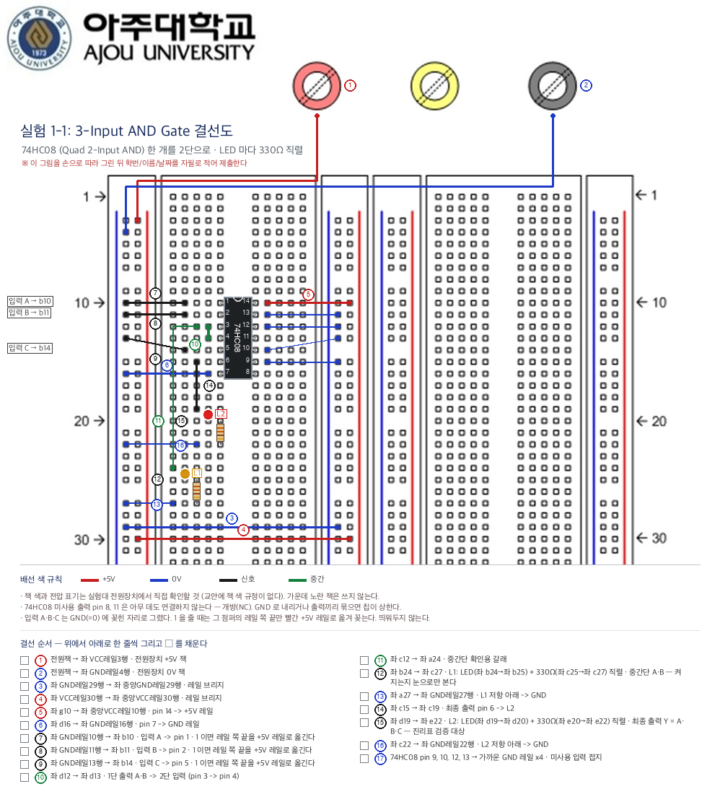
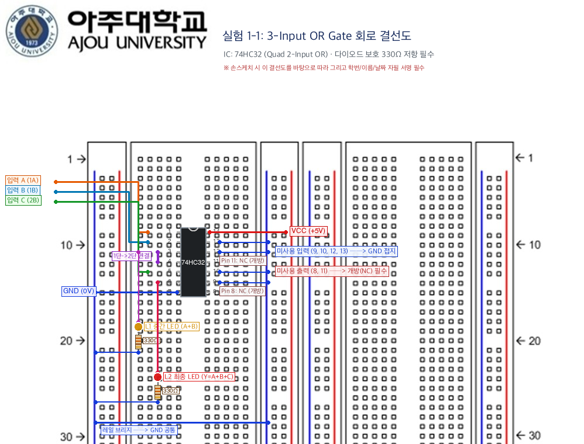
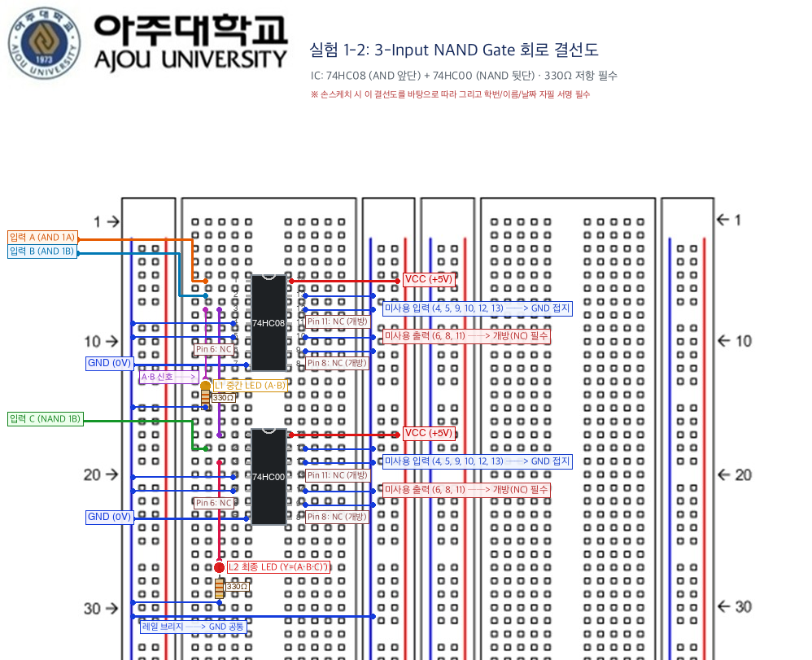
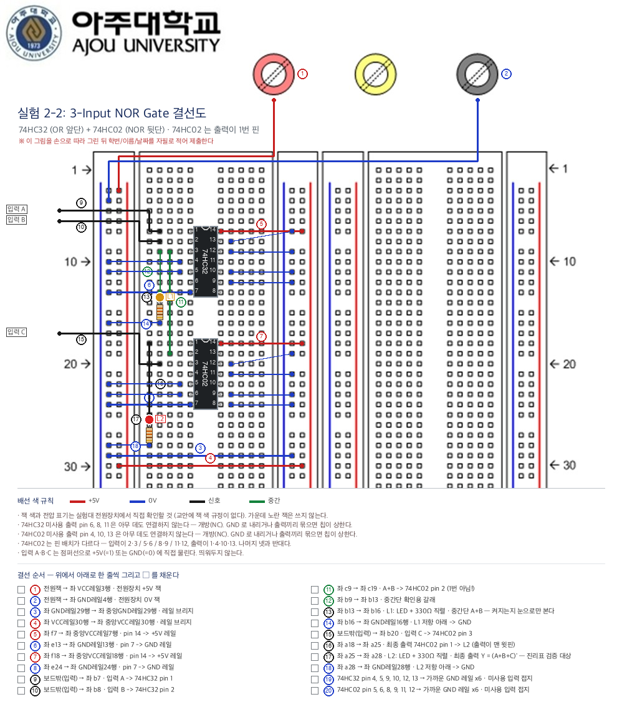
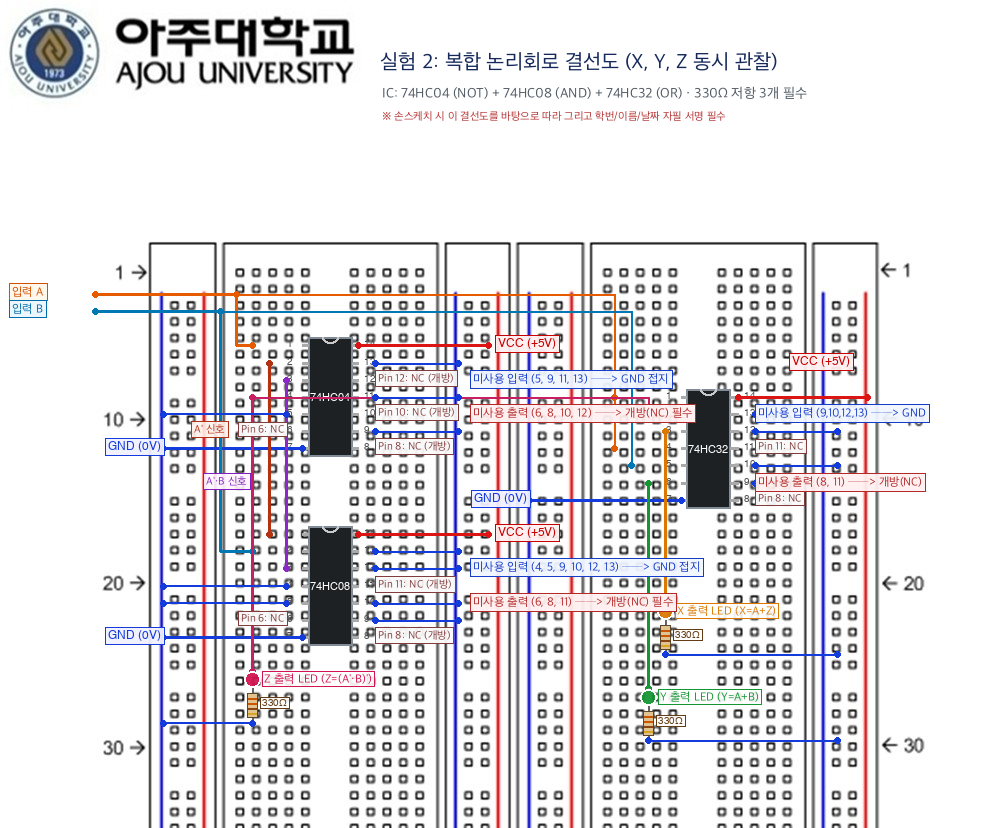

전원: VCC = +5V · GND = GND · 미사용 입력핀을 띄워 두지 않는다 (플로팅 금지) — GND 로 내릴지 VCC 로 올릴지는 아래 공통 규칙을 본다
진리표 — 확인 칸: ✓ 일치 / 값 = 불일치 시 실제로 관찰한 값 / 공란 = 미확인. 표를 통째로 진행하지 않았으면 그 표 아래에 진행하지 않았음 이라고 적는다.
스텝표 — 회색 칸에 읽은 값을 단위와 함께 적는다 (예: 3.2 V, 47 Ω). 확인 칸이 없다: 대조할 예상값이 없는 표다.
파형 — 격자에 직접 그리고 판독 조건 줄(V/div·time/div·프로브·모드)을 채운다. 조건이 없으면 결과보고서에서 화면의 칸을 볼트로 환산할 수 없다.
오늘의 흐름
| 순서 | 회로 | 쓰는 IC | 기록할 표 |
|---|
| 1/5 | C1 · 3-input AND (74HC08) | 74HC08 | T1 3-input AND 진리표 |
| 2/5 | C2 · 3-input OR (74HC32) | 74HC32 | T2 3-input OR 진리표 |
| 3/5 | C3 · 3-input NAND (74HC08 + 74HC00) | 74HC08 · 74HC00 | T3 3-input NAND 진리표 |
| 4/5 | C4 · 3-input NOR (74HC32 + 74HC02) | 74HC32 · 74HC02 | T4 3-input NOR 진리표 |
| 5/5 | C5 · 복합 논리회로 (74HC04 + 74HC08 + 74HC32) | 74HC04 · 74HC08 · 74HC32 | T5 복합회로 진리표 |
공통 규칙
- 모든 IC: pin 14 → VCC(+5V), pin 7 → GND
- 미사용 입력핀은 전부 GND 로 내린다. 플로팅 금지. 미사용 출력핀은 개방한다 (출력끼리 묶거나 GND 로 내리면 칩이 죽는다)
- 입력 A·B·C 는 점퍼선으로 +5V(=1) 또는 GND(=0) 에 직접 물린다. 띄워두지 않는다
- LED 는 애노드 쪽에 330Ω 직렬, 캐소드 → GND (교안 p11~p15 의 "다이오드 연결 시, 330Ω 저항 필수" 박스)
- 물리 칩 재사용: 교안 p10 준비물은 74HC00 / 74HC02 / 74HC04 / 74HC08 / 74HC32 / 74HC86 이고 수량 표기가 없다. 아래에서 U1·U3·U8 은 같은 74HC08 한 개를, U2·U5·U9 는 같은 74HC32 한 개를 항목마다 재배선해 쓰는 것이다
- 74HC02 는 나머지 셋과 핀 배치가 다르다. 출력 핀 기준으로 74HC00/08/32 는 핀 3·6·8·11 이 출력이지만 74HC02 는 핀 1·4·10·13 이 출력이다. 이 실험에서 가장 흔한 배선 실수다
참조 핀아웃
| IC | 게이트1 | 게이트2 | 게이트3 | 게이트4 | VCC | GND |
|---|
| 74HC00 (quad NAND) | 1,2 → 3 | 4,5 → 6 | 9,10 → 8 | 12,13 → 11 | 14 | 7 |
| 74HC08 (quad AND) | 1,2 → 3 | 4,5 → 6 | 9,10 → 8 | 12,13 → 11 | 14 | 7 |
| 74HC32 (quad OR) | 1,2 → 3 | 4,5 → 6 | 9,10 → 8 | 12,13 → 11 | 14 | 7 |
| 74HC02 (quad NOR) | 2,3 → 1 | 5,6 → 4 | 8,9 → 10 | 11,12 → 13 | 14 | 7 |
74HC04 (hex inverter): 1→2, 3→4, 5→6, 9→8, 11→10, 13→12. VCC 14, GND 7.
미확정 사항 — 실험실에서 확인할 것
교안 원문이 아닌 판단을 전부 모은다. 명세 쪽 미확정도 여기로 온다.
| 확인 | 항목 | 내용 | 확인 방법 |
|---|
| M1 | 74HC32 핀아웃이 저장소 데이터시트로도 저장소 회로도로도 확인되지 않는다(표준 DIP-14 쿼드 2입력 배치를 가정). 74HC04 는 저장소 데이터시트로, 74HC00 은 실험6 교안 p7·p8 회로도로, 74HC08·74HC02 는 TI 데이터시트로 각각 확인됐다 — # 핀아웃 출처 참조 | 실물 칩 각인 확인 후 벤더 데이터시트 대조 |
| M2 | 교안이 입력 스위치·딥스위치를 지정하지 않는다. 점퍼선 직결로 가정했다 | 실험실 키트 확인 |
| M3 | 74HC 출력으로 LED 를 직접 구동한다. 적색 LED 순방향 강하를 2V 로 보면 330Ω 에서 (5−2)/330 ≈ 9.1 mA 다. 저장소 74HC04 데이터시트는 VOH·VOL 을 IO = ±4.0 mA(VCC 4.5V) 조건에서 규정하므로 규격 조건의 두 배가 넘고, 절대 최대 IO = ±25 mA 보다는 작다 | 교안 지시가 그러하므로 그대로 따른다. 규격 조건을 넘겨 쓰면 VOH 가 규정 최소 3.98V 아래로 내려가므로, LED 밝기가 눈에 띄게 낮으면 이 지점을 먼저 본다 |
| M7 | 교안은 "5V 전압원"(p10)·"전압원 5V"(p11~p13) 만 적고 접지를 문자로 적지 않는다. 명세 power 의 GND 는 관례값이다 | 전원장치 GND 단자를 접지 레일에 물리고 IC 7번 핀과 도통을 본다 |
| M8 | 74HC86(XOR) 이 p10 준비물에 있으나 어느 항목도 XOR 회로를 구성하지 않는다. 예비용인지 다른 연도 잔재인지 알 수 없다 | 조교에게 이번 주차에 쓰는지 확인한다 |
| M10 | 항목마다 74HC08·74HC32 를 한 패키지씩 요구하는데 준비물은 종류당 하나다. 세 회로를 동시에 브레드보드에 올릴 수 없다(# 공통 규칙 의 물리 칩 재사용 참조) | 순차로 배선한다 — 앞 회로를 다 기록한 뒤 칩을 빼고 다음 회로를 꽂는다 |
회로 1/5 · C1 · 3-input AND (74HC08) · 기록: T1 · 판독: LED
준비 — 꽂는다: 74HC08

결선도: 실험01_결선도_3입력_AND.png
U1 = 74HC08 (quad 2-input AND, DIP-14)
- pin 14 → VCC(+5V)
- pin 7 → GND
- pin 1 ← 입력 A
- pin 2 ← 입력 B
- pin 3 → U1.pin4 (게이트1 출력 A·B → 게이트2 입력)
- pin 3 → L1 애노드 (330Ω 직렬) → GND ※ 교안 p11 의 중간단 LED
- pin 5 ← 입력 C
- pin 6 → L2 애노드 (330Ω 직렬) → GND ※ 최종 출력 Y = A·B·C, T1 의 검증 대상
배선을 끝내고 반드시 확인한다 — 칩마다 따로 본다
U1 = 74HC08 (quad 2-input AND, DIP-14)
- 미사용 입력핀: pin 9, 10, 12, 13 → GND
- 미사용 출력핀: pin 8, 11 → 개방
T1 · 3-input AND 진리표
출처: derived (Y = A·B·C)
| A |
B |
C |
Y예상 |
확인 |
| 0 | 0 | 0 | 0 | |
| 0 | 0 | 1 | 0 | |
| 0 | 1 | 0 | 0 | |
| 0 | 1 | 1 | 0 | |
| 1 | 0 | 0 | 0 | |
| 1 | 0 | 1 | 0 | |
| 1 | 1 | 0 | 0 | |
| 1 | 1 | 1 | 1 | |
사진: 완성 회로 1장 + 불일치 행마다 1장. 파일명 T1 row3.jpg 형식
T1 · 불일치 기록
회로 2/5 · C2 · 3-input OR (74HC32) · 기록: T2 · 판독: LED
앞 회로의 점퍼선을 모두 걷는다 · 뺀다: 74HC08 · 꽂는다: 74HC32

결선도: 실험01_결선도_3입력_OR.png
U2 = 74HC32 (quad 2-input OR, DIP-14)
- pin 14 → VCC(+5V)
- pin 7 → GND
- pin 1 ← 입력 A
- pin 2 ← 입력 B
- pin 3 → U2.pin4 (게이트1 출력 A+B → 게이트2 입력)
- pin 3 → L1 애노드 (330Ω 직렬) → GND
- pin 5 ← 입력 C
- pin 6 → L2 애노드 (330Ω 직렬) → GND ※ 최종 출력 Y = A+B+C, T2 의 검증 대상
배선을 끝내고 반드시 확인한다 — 칩마다 따로 본다
U2 = 74HC32 (quad 2-input OR, DIP-14)
- 미사용 입력핀: pin 9, 10, 12, 13 → GND
- 미사용 출력핀: pin 8, 11 → 개방
T2 · 3-input OR 진리표
출처: derived (Y = A+B+C)
| A |
B |
C |
Y예상 |
확인 |
| 0 | 0 | 0 | 0 | |
| 0 | 0 | 1 | 1 | |
| 0 | 1 | 0 | 1 | |
| 0 | 1 | 1 | 1 | |
| 1 | 0 | 0 | 1 | |
| 1 | 0 | 1 | 1 | |
| 1 | 1 | 0 | 1 | |
| 1 | 1 | 1 | 1 | |
사진: 완성 회로 1장 + 불일치 행마다 1장. 파일명 T2 row3.jpg 형식
T2 · 불일치 기록
회로 3/5 · C3 · 3-input NAND (74HC08 + 74HC00) · 기록: T3 · 판독: LED
앞 회로의 점퍼선을 모두 걷는다 · 뺀다: 74HC32 · 꽂는다: 74HC08, 74HC00
교안 p13 회로도 그대로. AND 로 A·B 를 만들고 NAND 로 C 와 합쳐 (A·B·C)' 를 낸다.

결선도: 실험01_결선도_3입력_NAND.png
U3 = 74HC08 (quad 2-input AND, DIP-14) — U1 과 같은 물리 칩
- pin 14 → VCC(+5V)
- pin 7 → GND
- pin 1 ← 입력 A
- pin 2 ← 입력 B
- pin 3 → U4.pin1 (게이트1 출력 A·B)
- pin 3 → L1 애노드 (330Ω 직렬) → GND
U4 = 74HC00 (quad 2-input NAND, DIP-14)
- pin 14 → VCC(+5V)
- pin 7 → GND
- pin 1 ← U3.pin3
- pin 2 ← 입력 C
- pin 3 → L2 애노드 (330Ω 직렬) → GND ※ 최종 출력 Y = (A·B·C)', T3 의 검증 대상
배선을 끝내고 반드시 확인한다 — 칩마다 따로 본다
U3 = 74HC08 (quad 2-input AND, DIP-14) — U1 과 같은 물리 칩
- 미사용 입력핀: pin 4, 5, 9, 10, 12, 13 → GND
- 미사용 출력핀: pin 6, 8, 11 → 개방
U4 = 74HC00 (quad 2-input NAND, DIP-14)
- 미사용 입력핀: pin 4, 5, 9, 10, 12, 13 → GND
- 미사용 출력핀: pin 6, 8, 11 → 개방
T3 · 3-input NAND 진리표
출처: derived (Y = (A·B·C)')
| A |
B |
C |
Y예상 |
확인 |
| 0 | 0 | 0 | 1 | |
| 0 | 0 | 1 | 1 | |
| 0 | 1 | 0 | 1 | |
| 0 | 1 | 1 | 1 | |
| 1 | 0 | 0 | 1 | |
| 1 | 0 | 1 | 1 | |
| 1 | 1 | 0 | 1 | |
| 1 | 1 | 1 | 0 | |
사진: 완성 회로 1장 + 불일치 행마다 1장. 파일명 T3 row3.jpg 형식
T3 · 불일치 기록
회로 4/5 · C4 · 3-input NOR (74HC32 + 74HC02) · 기록: T4 · 판독: LED
앞 회로의 점퍼선을 모두 걷는다 · 뺀다: 74HC08, 74HC00 · 꽂는다: 74HC32, 74HC02
같은 구조를 OR → NOR 로 바꾼 것. 74HC02 의 핀 순서에 주의 (출력이 pin 1).

결선도: 실험01_결선도_3입력_NOR.png
U5 = 74HC32 (quad 2-input OR, DIP-14) — U2 와 같은 물리 칩
- pin 14 → VCC(+5V)
- pin 7 → GND
- pin 1 ← 입력 A
- pin 2 ← 입력 B
- pin 3 → U6.pin2 (게이트1 출력 A+B)
- pin 3 → L1 애노드 (330Ω 직렬) → GND
U6 = 74HC02 (quad 2-input NOR, DIP-14)
- pin 14 → VCC(+5V)
- pin 7 → GND
- pin 2 ← U5.pin3 (게이트1 입력 A — pin 1 이 아니다)
- pin 3 ← 입력 C (게이트1 입력 B)
- pin 1 → L2 애노드 (330Ω 직렬) → GND ※ 게이트1 출력. Y = (A+B+C)', T4 의 검증 대상
배선을 끝내고 반드시 확인한다 — 칩마다 따로 본다
U5 = 74HC32 (quad 2-input OR, DIP-14) — U2 와 같은 물리 칩
- 미사용 입력핀: pin 4, 5, 9, 10, 12, 13 → GND
- 미사용 출력핀: pin 6, 8, 11 → 개방
U6 = 74HC02 (quad 2-input NOR, DIP-14)
- 미사용 입력핀: pin 5, 6, 8, 9, 11, 12 → GND
- 미사용 출력핀: pin 4, 10, 13 → 개방
T4 · 3-input NOR 진리표
출처: derived (Y = (A+B+C)')
| A |
B |
C |
Y예상 |
확인 |
| 0 | 0 | 0 | 1 | |
| 0 | 0 | 1 | 0 | |
| 0 | 1 | 0 | 0 | |
| 0 | 1 | 1 | 0 | |
| 1 | 0 | 0 | 0 | |
| 1 | 0 | 1 | 0 | |
| 1 | 1 | 0 | 0 | |
| 1 | 1 | 1 | 0 | |
사진: 완성 회로 1장 + 불일치 행마다 1장. 파일명 T4 row3.jpg 형식
T4 · 불일치 기록
회로 5/5 · C5 · 복합 논리회로 (74HC04 + 74HC08 + 74HC32) · 기록: T5 · 판독: LED
앞 회로의 점퍼선을 모두 걷는다 · 뺀다: 74HC02 · 꽂는다: 74HC04, 74HC08 · 패키지는 두고 재배선한다: 74HC32
교안 p15. 입력 2개(A, B), 출력 3개(X, Y, Z), LED 3개. C 입력은 없다.

결선도: 실험01_결선도_복합논리회로.png
U7 = 74HC04 (hex inverter, DIP-14)
- pin 14 → VCC(+5V)
- pin 7 → GND
- pin 1 ← 입력 A (인버터1 입력)
- pin 2 → U8.pin1 (인버터1 출력 A')
- pin 3 ← U8.pin3 (인버터2 입력 A'·B)
- pin 4 → U9.pin2 (인버터2 출력 Z = (A'·B)')
- pin 4 → LED_Z 애노드 (330Ω 직렬) → GND
U8 = 74HC08 (quad 2-input AND, DIP-14) — U1 과 같은 물리 칩
- pin 14 → VCC(+5V)
- pin 7 → GND
- pin 1 ← U7.pin2 (A')
- pin 2 ← 입력 B
- pin 3 → U7.pin3 (A'·B)
U9 = 74HC32 (quad 2-input OR, DIP-14) — U2 와 같은 물리 칩
- pin 14 → VCC(+5V)
- pin 7 → GND
- pin 1 ← 입력 A (게이트1)
- pin 2 ← U7.pin4 (Z)
- pin 3 → LED_X 애노드 (330Ω 직렬) → GND ※ X = A + Z
- pin 4 ← 입력 A (게이트2)
- pin 5 ← 입력 B
- pin 6 → LED_Y 애노드 (330Ω 직렬) → GND ※ Y = A + B
배선을 끝내고 반드시 확인한다 — 칩마다 따로 본다
U7 = 74HC04 (hex inverter, DIP-14)
- 미사용 입력핀: pin 5, 9, 11, 13 → GND
- 미사용 출력핀: pin 6, 8, 10, 12 → 개방
U8 = 74HC08 (quad 2-input AND, DIP-14) — U1 과 같은 물리 칩
- 미사용 입력핀: pin 4, 5, 9, 10, 12, 13 → GND
- 미사용 출력핀: pin 6, 8, 11 → 개방
U9 = 74HC32 (quad 2-input OR, DIP-14) — U2 와 같은 물리 칩
- 미사용 입력핀: pin 9, 10, 12, 13 → GND
- 미사용 출력핀: pin 8, 11 → 개방
Z 노드(U7.pin4)는 LED_Z 와 U9.pin2 로 팬아웃한다. 부울대수상 X ≡ Z 이므로 LED_X 와 LED_Z 가 언제나 같이 켜져야 한다. 다르면 배선 오류다.
T5 · 복합회로 진리표
출처: derived (X = A + (A'·B)' ; Y = A + B ; Z = (A'·B)')
| A |
B |
X예상 |
Y예상 |
Z예상 |
확인 |
| 0 | 0 | 1 | 0 | 1 | |
| 0 | 1 | 0 | 1 | 0 | |
| 1 | 0 | 1 | 1 | 1 | |
| 1 | 1 | 1 | 1 | 1 | |
사진: 완성 회로 1장 + 불일치 행마다 1장. 파일명 T5 row3.jpg 형식
T5 · 불일치 기록